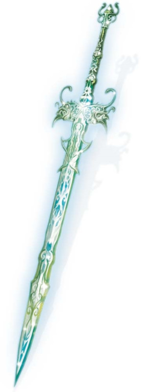

Épée de Zariel
[ Sword of Zariel ]
Arme (épée longue), artéfact (nécessite un lien avec une créature jugée digne par l'épée)
Cette épée appartenait à l'ange Zariel avant sa déchéance. Composée d'acier céleste, elle génère en permanence une faible lueur et un discret bourdonnement. Cette arme décide qui est digne ou non de se lier à elle. Elle désire comme porteur un être brave capable d'actes héroïques.
Lien. L'épée permet de se lier immédiatement, sans avoir besoin d'un repos court. Quand vous vous y liez pour la première fois, vous êtes transcendé en une version céleste de vous même, qu'il s'agisse de votre apparence physique mais aussi de votre être intérieur. Aucune magie ni intervention divine ne peut annuler cette métamorphose. Votre alignement devient immédiatement loyal bon et vous gagnez les traits suivants :
Langue des anges. Vous pouvez parler, lire et écrire le céleste.
Résistance céleste. Vous avez la résistance aux dégâts radiants et nécrotiques.
Présence divine. Votre Charisme passe à 20, à moins qu'il ne soit déjà à 20 ou plus.
Ailes de plumes. Une magnifique paire d'ailes de plumes pousse dans votre dos, vous octroyant une vitesse de vol de 27 mètres, ainsi que la capacité de vol stationnaire. Si vous aviez déjà des ailes, ces dernières tombent au sol et ces nouvelles les remplacent.
Vision véritable. Vos yeux deviennent des puits de lumière argentée. Vous pouvez voir dans les ténèbres naturelles et magiques, vous voyez les créatures et objets invisibles, détectez automatiquement les illusions visuelles et réussissez les jets de sauvegarde à leur encontre, percevez la forme véritable des métamorphes et des créatures transformées magiquement, et voyez dans le plan éthéré, le tout jusqu'à 18 mètres.
Nouvelle personnalité. Vous gagnez de nouveaux traits de personnalité d'après les tables suivantes. Ces traits effacent et remplacent tout trait, idéal, lien ou défaut précédent incompatible.
Lumière sacrée. L'épée émet une lumière vive dans un rayon de 1,50 mètre et une lumière faible sur 1,50 mètre supplémentaire. Les fiélons sont déconcertés par l'aura lumineuse qui leur est douloureuse et ont un désavantage à leurs jets d'attaque quand ils se trouvent à l'intérieur du rayon de lumière vive, qu'ils la voient ou non. Par une action bonus, vous pouvez intensifier la lumière de l'épée afin qu'elle émette une lumière vive dans un rayon de 4,50 mètres et une lumière faible sur 4,50 mètres supplémentaires, ou la faire retourner à son intensité initiale.
Propriétés aléatoires. L'épée possède 2 propriétés bénéfiques mineures déterminées aléatoirement.
Radiance accablante. L'épée inflige 9 (2d8) dégâts radiants supplémentaires à toute créature qu'elle touche, ou 16 (3d10) dégâts radiants supplémentaires si l'arme est tenue à deux mains. Une créature mauvaise subissant ces dégâts radiants doit réussir un jet de sauvegarde de Constitution DD 17 ou être aveuglée jusqu'à la fin de son prochain tour.
Conscience. L'Épée de Zariel est un objet intelligent d'alignement loyal bon, d'une Intelligence de 10, d'une Sagesse de 20 et d'un Charisme de 18. Elle entend et voit normalement jusqu'à 9 mètres. L'épée communique en transmettant des émotions à son porteur.
Medium de vérité. Tant que vous tenez l'épée, vous avez un avantage aux jets de Sagesse (Intuition).
Détruire l'épée. Zariel peut détruire l'épée simplement en la saisissant. Elle n'a pas pu s'y résoudre quand elle était encore un ange, mais l'archidiable qu'elle est devenue le ferait sans hésiter. À moins d'être brandie par un paladin ou un clerc bon de niveau 10 ou plus, ou un ange de FP 15 ou plus, l'épée serait détruite si elle est utilisée pour briser le Compagnon (voir "Briser le Compagnon", page 154 de "Descente en Averne"). Si Zariel est tuée pour de bon (c'est-à-dire dans les Neufs enfers), l'épée perd sa résistance et devient aussi fragile qu'une épée longue ordinaire.
Lien. L'épée permet de se lier immédiatement, sans avoir besoin d'un repos court. Quand vous vous y liez pour la première fois, vous êtes transcendé en une version céleste de vous même, qu'il s'agisse de votre apparence physique mais aussi de votre être intérieur. Aucune magie ni intervention divine ne peut annuler cette métamorphose. Votre alignement devient immédiatement loyal bon et vous gagnez les traits suivants :
Langue des anges. Vous pouvez parler, lire et écrire le céleste.
Résistance céleste. Vous avez la résistance aux dégâts radiants et nécrotiques.
Présence divine. Votre Charisme passe à 20, à moins qu'il ne soit déjà à 20 ou plus.
Ailes de plumes. Une magnifique paire d'ailes de plumes pousse dans votre dos, vous octroyant une vitesse de vol de 27 mètres, ainsi que la capacité de vol stationnaire. Si vous aviez déjà des ailes, ces dernières tombent au sol et ces nouvelles les remplacent.
Vision véritable. Vos yeux deviennent des puits de lumière argentée. Vous pouvez voir dans les ténèbres naturelles et magiques, vous voyez les créatures et objets invisibles, détectez automatiquement les illusions visuelles et réussissez les jets de sauvegarde à leur encontre, percevez la forme véritable des métamorphes et des créatures transformées magiquement, et voyez dans le plan éthéré, le tout jusqu'à 18 mètres.
Nouvelle personnalité. Vous gagnez de nouveaux traits de personnalité d'après les tables suivantes. Ces traits effacent et remplacent tout trait, idéal, lien ou défaut précédent incompatible.
| d8 | Traits de personnalité |
|---|---|
| 1 | Je traite tout être avec respect, même mon ennemi. |
| 2 | Je ne mens jamais. |
| 3 | J'aime partager ma vision du monde et mes expériences avec mon prochain. |
| 4 | Quand je parle, je vais droit au but. |
| 5 | Je cite souvent des textes religieux (parfois à tort). |
| 6 | La cruauté et l'injustice me font rapidement entrer dans une colère noire. |
| 7 | Ma confiance et mon soutien se méritent. |
| 8 | J'aime que les choses soient claires et bien organisées. |
| d6 | Idéaux |
|---|---|
| 1 | Charité. Je suis toujours là pour ceux dans le besoin (Bon). |
| 2 | Foi. J'ai choisi de suivre à la lettre les principes d'une divinité loyale bonne (Loyal). |
| 3 | Responsabilité. C'est le devoir des forts que de protéger les faibles (Loyal). |
| 4 | Respect. Tout être mérite d'être traité avec dignité (Bon). |
| 5 | Honneur. Mon attitude déterminera ma récompense dans l'au-delà (Loyal). |
| 6 | Rédemption. Tout être est capable de s'améliorer (Bon). |
| d6 | Lien |
|---|---|
| 1 | Je psalmodie continuellement un air religieux. |
| 2 | Je tiens un registre de toutes mes croyances et de tous mes péchés. Quand il sera terminé, ce livre sera mon don au multivers. |
| 3 | J'ai de très bons souvenirs d'Idyllglen, malgré le fait que je n'aie jamais mis les pieds dans cette bucolique cité autrement qu'en rêve. |
| 4 | Je suis prêt à mourir pour ceux qui se battent à mes côtés, quels que soient leurs errements. |
| 5 | Je rends honneur à l'ange Zariel en détruisant les fiélons et autres suppôts du mal, ou qu'ils se trouvent. |
| 6 | L'Épée de Zariel m'a choisi. Je n'échouerai pas au devoir qui m'a été échu. |
| d6 | Défauts |
|---|---|
| 1 | Je juge les autres trop promptement. |
| 2 | Je pardonne trop aisément. |
| 3 | Je suis prêt à sacrifier la vie d'autrui pour le plus grand bien. |
| 4 | Un défaut ? Je n'ai aucun défaut, je ne suis que pure perfection ! |
| 5 | Rien ni personne ne se mettra sur la voie de ma croisade contre le mal. |
| 6 | J'ignore ceux qui ne suivent pas mes plans, car mon jugement est supérieur à celui des autres. |
Lumière sacrée. L'épée émet une lumière vive dans un rayon de 1,50 mètre et une lumière faible sur 1,50 mètre supplémentaire. Les fiélons sont déconcertés par l'aura lumineuse qui leur est douloureuse et ont un désavantage à leurs jets d'attaque quand ils se trouvent à l'intérieur du rayon de lumière vive, qu'ils la voient ou non. Par une action bonus, vous pouvez intensifier la lumière de l'épée afin qu'elle émette une lumière vive dans un rayon de 4,50 mètres et une lumière faible sur 4,50 mètres supplémentaires, ou la faire retourner à son intensité initiale.
Propriétés aléatoires. L'épée possède 2 propriétés bénéfiques mineures déterminées aléatoirement.
Radiance accablante. L'épée inflige 9 (2d8) dégâts radiants supplémentaires à toute créature qu'elle touche, ou 16 (3d10) dégâts radiants supplémentaires si l'arme est tenue à deux mains. Une créature mauvaise subissant ces dégâts radiants doit réussir un jet de sauvegarde de Constitution DD 17 ou être aveuglée jusqu'à la fin de son prochain tour.
Conscience. L'Épée de Zariel est un objet intelligent d'alignement loyal bon, d'une Intelligence de 10, d'une Sagesse de 20 et d'un Charisme de 18. Elle entend et voit normalement jusqu'à 9 mètres. L'épée communique en transmettant des émotions à son porteur.
Medium de vérité. Tant que vous tenez l'épée, vous avez un avantage aux jets de Sagesse (Intuition).
Détruire l'épée. Zariel peut détruire l'épée simplement en la saisissant. Elle n'a pas pu s'y résoudre quand elle était encore un ange, mais l'archidiable qu'elle est devenue le ferait sans hésiter. À moins d'être brandie par un paladin ou un clerc bon de niveau 10 ou plus, ou un ange de FP 15 ou plus, l'épée serait détruite si elle est utilisée pour briser le Compagnon (voir "Briser le Compagnon", page 154 de "Descente en Averne"). Si Zariel est tuée pour de bon (c'est-à-dire dans les Neufs enfers), l'épée perd sa résistance et devient aussi fragile qu'une épée longue ordinaire.
Adventures (Descent into Avernus)
